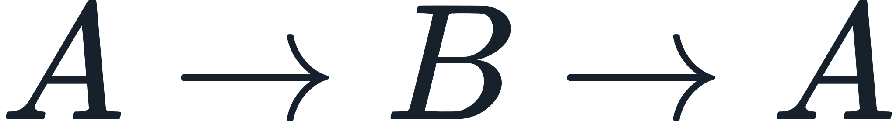

Continuum Evidence and Verification Record
CURRENT-BUILD AUTHORITY: All active registered claims are adjudicated and closed at their declared scope. Terminal classes described in this document are execution semantics for posed inputs and do not denote unfinished canonical project work.
Current evidence architecture
Current standing is established by retained evidence and claim-specific certificates.
Scientific claims
- 210 scientific claim certificates:
Evidence/Claim_Certification/ - Scientific certification register:
SEAM_210_CLAIM_CERTIFICATION_REGISTER.md
Project claims
- 50 project claim certificates:
Evidence/Project_Claim_Certification/ - Project certification register:
SEAM_50_PROJECT_CLAIM_CERTIFICATION_REGISTER.md
Combined
SEAM_260_CLAIM_CERTIFICATION_REGISTER.mdSEAM_260_CLAIMS_CANONICAL.xlsx
Evidence-linking rule
A certificate must bind the exact retained evidence/run object by path and SHA-256.
For derived phenomena, the certificate names the upstream derivation rather than merely identifying a downstream conventional projection.
Example — macroscopic attraction:
resolved pair structure -> field/overlap relation -> interaction Hamiltonian -> force derivative -> finite-body aggregation -> exterior inverse-square attraction -> orbital continuation
The conventional gravity/Newton/GR descriptions are correspondence layers after the native derivation.
Quantitative discipline
Numerical accuracy is stated only when a retained evidence object contains the relevant quantitative comparison. An exact algebraic residual is not represented as zero experimental error.
Scope discipline
A project architecture or methodology claim may close without a domain-wide numerical benchmark when the registered proposition itself is architectural/methodological. Its certificate must preserve that boundary explicitly.
Current verification
The canonical dependency verifier checks:
- certificate presence;
- evidence/run path existence;
- SHA-256 identity;
- no missing current dependencies;
- evidence references resolve to active certified package objects.
Current combined registered-claim standing: 260/260 closed at exact registered scope. This is not a 260-item numerical-validation count. The 210 scientific claims are scope-aggregated in SCIENTIFIC_CLAIM_SCOPE_BREAKDOWN.md; current runner terminals are reported in CURRENT_STANDING.md.
FP-05 allotropy falsification closure — R90
Evidence/Thermodynamics/R90_FP05_IRON_ALLOTROPY_REENTRANT_SELECTOR_LOCK/ is the retained locked constructive proof addressing the re-entrant-allotropy challenge to FP-05. The native stage seals an

argmax sequence under a strictly monotone perturbation coordinate and one unchanged scalar selector, with temperature and iron phase information prohibited upstream. The external NIST pure-iron sequence is revealed only after the native result is frozen.The record closes the principle-level claim that re-entrant allotropy is mathematically incompatible with FP-05. It does not represent the test as a numerical prediction of iron transition temperatures.
FP-04 one-law dependency identity — R166
Evidence/Locked_Runs/R166_FP04_ONE_LAW_DEPENDENCY_IDENTITY/ executes the retained R28 pair-relation runtime and audits the R24 exterior/body continuation. The lock distinguishes operator scope from primitive-law identity and requires the current long-range/body branch to trace to the same resolved pair consequence without an independent physical term,  , Newtonian
, Newtonian G, or comparator-fitted coefficient as a native producer. External NIST H2 and NIST/CODATA gravitation references are downstream comparators only. Final terminal: PASS_FP04_ONE_LAW_PRIMITIVE_IDENTITY_FALSIFICATION_CLOSED.
FP-06 complete closure versus shell closure — R167
Evidence/Locked_Runs/R167_FP06_COMPLETE_VS_SHELL_CLOSURE/ reproduces the Z=128 full shell fill and separately verifies the specification's explicit boundary between shell-admissibility and nuclear containment/isotope stability/synthesis. Only after native predicate separation does the run reveal IUPAC evidence for recognized element 118 and the present element table. Final terminal: PASS_FP06_Z118_Z128_FALSIFICATION_CLOSED.
R168 — Pure-iron empirical excitation-state reverse engineering
Primary evidence: NIST-JANAF Fe-004 (alpha/delta Fe) and Fe-005 (gamma Fe), both at 0.1 MPa, with structural phase sequence cross-checked against NIST AMS 100-14. After placing the gamma enthalpy data on the alpha-Fe 298.15 K reference, the two solid-solid transitions absorb +0.900 kJ/mol and +0.836 kJ/mol respectively while the observed relational topology is BCC -> FCC -> BCC. Primary and replay outputs are byte-identical.
Terminal: PASS_R168_FE_EMPIRICAL_EXCITATION_BINDING_QUALIFIED.
Scope: empirical reverse-engineering/application binding. This record does not claim first-principles numerical prediction of the transition temperatures and does not equate Gibbs free energy with native  .
.
R231 canonical nuclear authority lock
Current nuclear formation authority is  together with the certified four-selector output contract.
together with the certified four-selector output contract.